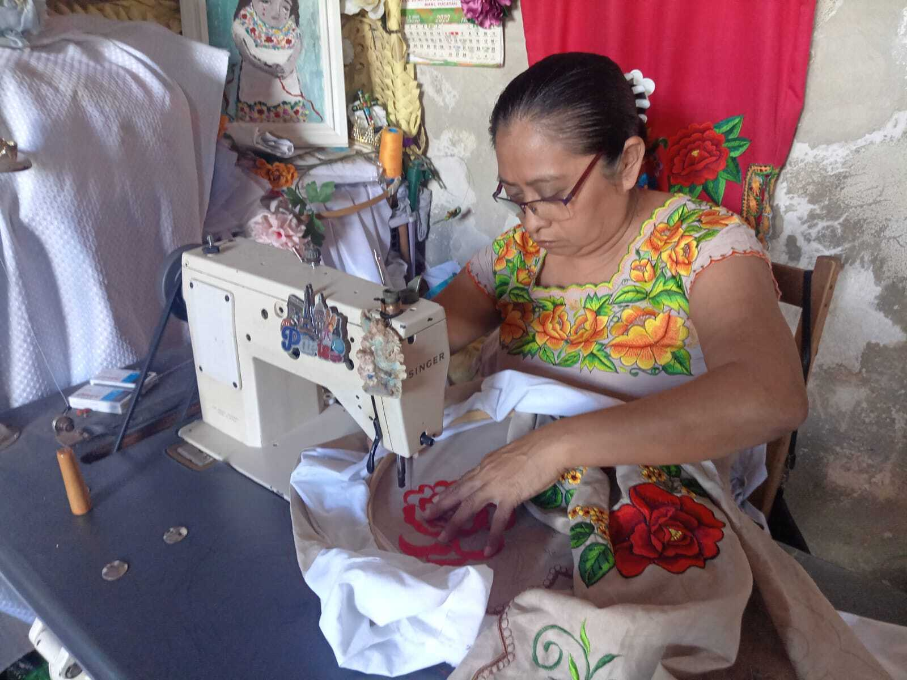

Imelda Cocom Góngora
Imelda Cocom Góngora, de 54 años y originaria de Tekax, es una talentosa bordadora con 42 años de experiencia en el arte del bordado. Desde los 12 años, Imelda aprendió el bordado a mano, y a los 15 años, perfeccionó el bordado a máquina bajo la guía de su abuela.
Actualmente, trabaja de manera independiente y, desde hace 8 años, también se desempeña como maestra de corte y confección, transmitiendo sus conocimientos y habilidades a nuevas generaciones.
